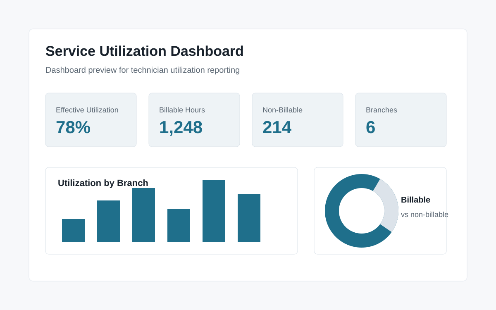

Project summary
This dashboard is designed to help service managers monitor technician utilization and understand how available labor time is being used across branches.
Business problem
Service organizations often have labor data spread across work orders, time entries, employee schedules, and branch assignments. Managers need to know whether technicians are spending enough time on billable work and where non-billable time is affecting capacity.
Data/reporting challenges
The main reporting challenge is separating billable and non-billable activity while also accounting for unavailable time such as vacation and sick time. A simple utilization percentage can be misleading if it treats approved time off the same as available work hours.
Solution approach
The dashboard uses branch filters, technician-level measures, and effective utilization calculations that exclude vacation and sick time from available capacity. This gives managers a more realistic view of labor usage and operational visibility.
Key features
- Technician utilization by branch and time period
- Billable vs non-billable time analysis
- Effective utilization excluding vacation and sick time
- Branch filtering for local operational review
- Visibility into capacity, exceptions, and underused labor
Screenshots

What this demonstrates
This project demonstrates the ability to translate operational labor data into useful management reporting, create practical utilization measures, and design dashboards around business questions instead of vanity metrics.
Tools used
SQL, Power BI, data modeling, utilization metrics, operational reporting